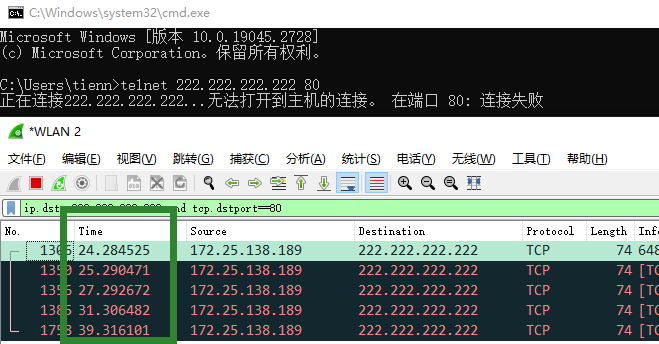
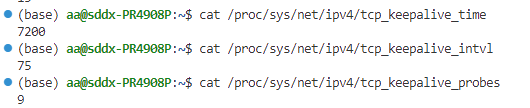
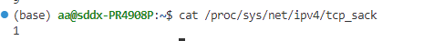
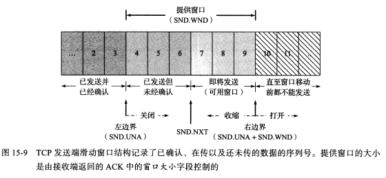
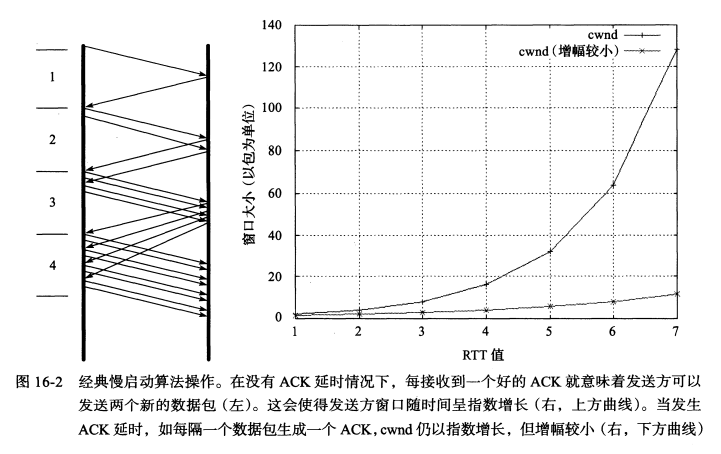
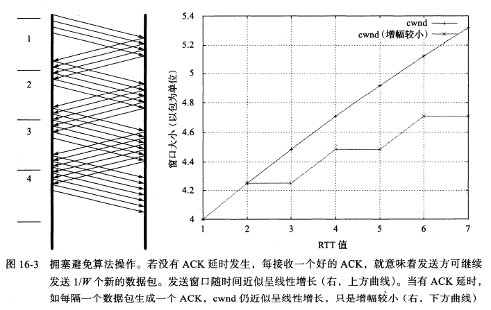

整理一下看过的TCP相关的内容，主要是顺着小林coding里的要点看下来的，有些不太明白的地方去《TCP/IP详解 卷1》翻了翻
主要内容：TCP头部关键信息、TCP和UDP的区别、三次握手四次挥手、TCP重传、流量控制和拥塞控制
TCP头中的关键内容
32位序列号：在建立连接时生成随机数作为初始值（与时间有关，每4微妙值加1，同时也与一个根据四元组计算的哈希值有关），每发送N字节数据，该值就加N，通过此序列号可以保证接受到的数据包有序
32位确认应答号：下一次希望收到的数据序列号，该应答号之前的数据已经被正常接收，可以用于处理丢包的问题
控制位：ACK/RST/SYN/FIN/PSH/URG
源端口号、目的端口号
4位首部长度：存储的是首部长度有多少个4字节
校验和：校验首部+数据，如果接收方发现校验和有问题，会丢弃收到的段，发送方会超时重发
TCP的特点以及与UDP的区别
面向连接、可靠、字节流
说明：必须一对一建立连接、保证报文一定能被接收方收到、不在字节流中插入记录标识符，每次发送的大小和接收的大小不一定相同，发送接收次数也不一定相同
| TCP | UDP |
|---|---|
| 先建立连接 | 即刻传输数据 |
| 一对一 | 一对一、一对多、多对多 |
| 无差错、不丢失、不重复、有序 | 尽最大努力交付（QUIC可靠） |
| 有拥塞控制和流量控制 | 没有 |
| 首部20字节（不用选项的话） | 固定8字节 |
| 流式传输，没有边界 | 以数据包为单位发送 |
| 可以在传输层分片（大于MSS） | 不会在数据层分片，如果大于MTU会给IP层分片 |
| 常用于 FTP文件传输； HTTP / HTTPS | 常用于 DNS； 视频、音频等多媒体通信；广播 |
TCP连接
建立TCP连接是为了客户端和服务端在以下方面达成共识：socket、序列号、窗口大小
一个TCP连接可以用（源地址、源端口、目的地址、目的端口）这样一个四元组表示
如果协议不确定，（源地址、源端口、目的地址、目的端口、通信协议）这样一个五元组可以唯一确定一个会话（隐含TCP和UDP是可以使用同样的端口的）
还有个七元组：（源地址、源端口、目的地址、目的端口、通信协议、服务类型、接口索引）
三次握手

图片来源于小林coding
为什么是三次握手？
- 双方都经过了发送-接收的过程，同时ACK位保证了对方已知自己能够成功接收，同时同步双方的初始序列号。（两次：发送方不知道接收方能否成功接收，也就无法同步序列号；四次：冗余）
- 防止无效的历史连接造成资源浪费（考虑client发送了一个SYN报文之后宕机了，然后在server没收到之前重启，又重新发了一个新的SYN报文，如果两次就能建立连接，此时假设server收到了旧SYN报文，发送一个SYN+ACK连接就已经建立了，然后客户端还得发RST去断开旧连接。）；防止冗余连接造成资源浪费（考虑client第一次发的SYN报文堵塞了，然后超时重发，如果两次握手，server收到任何一个之后发送SYN+ACK就建立连接了，假设server不知道自己的SYN+ACK是否被收到，再收到另一个SYN就会重复的建立连接）
ISN为什么要随时间变化？
- 防止历史报文被下一个相同四元组的连接错误接收（上一次连接中发送的数据如果因为网络拥塞等原因没有及时到达，而是在下一次相同四元组标识的连接中到达，可能会恰好与当前序号相符合，导致被错误接收）
- 防止伪造ISN造成安全问题
三次握手中每一次丢失会发生什么？
- 第一次丢失：server收不到就不会发SYN+ACK，client超时之后会重传,第一次超时时间为RTO，RTO之后重新发送，超时时间会设置为2RTO，再超时4RTO……以此类推，每次是上一次超时时间的2倍。如果达到最大重传次数还没能收到SYN+ACK，client会断开连接

可以看到超时重传时间1s 2s 4s 8s
- 第二次丢失：SYN+ACK包含两部分作用，如果丢失，对客户端来说会认为自己的SYN没发到，超时重传；对服务端来说，自己的SYN发了之后一直没收到ACK，会超时重传SYN+ACK.客户端达到最大重传次数后等待一段时间断开连接，服务端达到最大重传次数后等待一段时间也断开连接.
- 第三次丢失：server会认为自己的SYN+ACK没有被收到，会超时重传，达到最大重传次数后等待一段时间，断开连接
四次挥手

图片来源于小林coding
为什么是四次挥手？
TCP的半关闭连接，发送FIN意味着发送方不再发送数据了但是还可以接收数据。服务器在收到FIN之后，可能还有数据需要处理或发送回client，所以先发送一个ACK，当server也不会再发送数据时，才会发送FIN给client
一定是四次挥手吗？
也有可能是三次挥手，
- TCP延迟确认开启时，第二次第三次挥手会合并。
TCP延迟确认的意思是：将ACK与数据一同发送，提高网络的利用效率，如果有需要发送的数据，会跟ACK一起发送；如果没有，会等待一段时间看是否有数据可以一同发送；如果等待过程中又接收到新的数据，ACK会停止等待立即发送。
（可以通过将socket设置里的TCP_QUICKACK置1关闭延迟确认）
- server端没有数据要处理发送了，可能会将FIN和ACK合并发送
第一次挥手丢失了会发生什么？
以client为主动关闭方。client会不断超时重传，直到达到上限（tcp_orphan_retries）后等待一段时间直接到close状态
第二次挥手丢失了会发生什么？
client收不到server的ACK，不断重传FIN报文，直到收到ACK或者到达最大重传次数，等待一段时间后client断开连接。
第三次挥手丢失了会发生什么？
server会不断超时重传，达到最大超时次数后，等待一段时间没收到就断开连接
client在收到第二次的ACK后，进入FIN_WAIT2状态，该状态有时长限制（tcp_fin_timeout），如果等不到server的FIN就会断开连接
第四次挥手丢失了会发生什么？
服务器收不到ACK报文，会不断重传第三次的FIN，直到到达最大重传次数，之后等待一段时间，退出LAST_ACK状态，CLOSE
客户端发送ACK之后，会进入TIME_WAIT状态并启动计时器（2Maximum Segment Lifetime），每次如果能够收到重传的FIN，会重置计时器。如果收不到，等待2MSL后退出TIME_WAIT状态，CLOSE
为什么TIME_WAIT等待时间是2MSL（为什么需要TIME_WAIT状态）？
- 给FIN一次重发的机会。如果第一次FIN丢失或ACK丢失，第二次FIN重发和发送ACK返回到server的时间刚好能在第二个MSL内到达；或第二次FIN刚好能在2MSL之内到达，再次发送ACK
- 确保当前连接中的所有数据失效，不会留到下一个连接中造成影响。
TIME_WAIT过多的危害以及如何缓解
TIME_WAIT状态时不会再有实际数据的传输，但仍然处于连接状态中：
- 对client来说，会占用过多端口资源，导致无法处理新的连接
- 对server来说，由于每个TCP连接是由TCP四元组确定的，所以只要IP不同，端口资源的影响能够处理。但仍然会占用系统资源，如文件描述符、寄存器、CPU资源、内存资源等。
优化方法：
- 打开 net.ipv4.tcp_tw_reuse 和 net.ipv4.tcp_timestamps 选项。前者只能用于连接发起方，开启该功能后，在调用 connect() 函数时，内核会随机找一个 time_wait 状态超过 1 秒的连接给新的连接复用。后者开启了时间戳，所以有问题的数据包会根据时间戳是否过期进行丢弃，2MSL的一大作用失效。
- net.ipv4.tcp_max_tw_buckets。当系统中处于 TIME_WAIT 的连接一旦超过这个值时，系统就会将后面的 TIME_WAIT 连接状态重置
- 程序中使用 SO_LINGER ，应用强制使用 RST 关闭。
SO_LINGER设置的是延迟关闭的时间，在l_linger为0，l_onoff非0的情况下，调用close后会立即发送RST，跳过四次挥手阶段
之前记混的一个：SO_REUSEADDR是允许完全重复的捆绑
服务器出现大量TIME_WAIT的原因
TIME_WAIT状态是主动关闭方才会出现的状态，此情况说明服务器主动断开了大量TCP连接
- 没有使用HTTP长连接
HTTP长连接在HTTP/1.0中默认关闭，HTTP/1.1中默认开启。需要双方在请求-响应的header中开启Connection: Keep-Alive选项。大多数 Web 服务的实现，不管哪一方禁用了 HTTP Keep-Alive，都是由服务端主动关闭连接，那么此时服务端上就会出现 TIME_WAIT 状态的连接。
TCP也有Keepalive，指的是TCP的保活机制。如果TCP连接中一直没有数据交互，触发了TCP保活机制，那么内核中的TCP协议栈会发送探测报文（一般保活功能是为服务器程序提供的）。客户主机必须处于以下四个状态之一：
客户主机正常运行且从服务器可达。会正常响应探测报文，保活定时器复位
客户主机崩溃，并且关闭或者正在重新启动。无法响应探测报文，服务器将探测报文超时时间设置为75s，即每75s发送一个探测报文，如果10个之后没有收到响应，服务器认为客户主机已经关闭并终止连接（数值来自于《TCP/IP详解，卷1》，linux默认保活时间7200s，探测次数9次，时间间隔75s,也就是7875s之后会发现连接“死亡”）

客户主机正常运行，但从服务器不可达。与上边的状态相同
客户主机崩溃，但已经重新启动。服务器会收到响应，但是响应是一个RST，服务器终止连接
P.S. 还有种情况是进程崩溃，这时OS会回收进程资源发送FIN报文，服务器是可以感知的
- HTTP长连接超时
web服务软件一般会提供一个参数指定HTTP长连接的超时时间，以防止没有请求的连接占用资源。（nginx的keepalive_timeout参数）定时器到时间服务端会关闭该连接，出现TIME_WAIT状态
- HTTP长连接请求数量达到上限
Web 服务端通常会有个参数，来定义一条 HTTP 长连接上最大能处理的请求数量，当超过最大限制时，就会主动关闭连接。（nginx的keepalive_requests参数）
服务器出现大量CLOSE_WAIT的原因
CLOSE_WAIT出现是在收到FIN报文之后，向应用程序交付EOF，在调用close()之后会转为LAST_ACK状态
当服务端出现大量 CLOSE_WAIT 状态的连接的时候，说明服务端的程序没有调用 close 函数关闭连接
TCP重传机制
重传是TCP实现可靠传输的方式之一
超时重传
发送数据时设置一个定时器，如果超时没有收到ACK（数据包丢失或者应答丢失），就会重发数据。
超时时间（RTO）的设定很重要，过长：传输效率低；过短：不必要重传浪费资源，增加网络拥塞程度
RTO的值应该略大于RTT（Round-Trip Time）,因为RTT是描述数据包的往返时间的，如果正常的话，RTT内发送方会收到ACK应答。但是路由器和网络流量均会变化，因此RTT也可能会经常发生变化，所以TCP应该跟踪其变化并相应地改变RTO
RTT的估计需要采样RTT的时间，并且要加权平均，因为网络状况是不断变化的；另外还需要采样RTT的波动范围：
A是加权平滑的RTT，M是新测量到的RTT，D是被平滑的均值偏差
g=0.125,h=0.25
如果超时重发的数据，再次超时的时候，又需要重传的时候，TCP 的策略是超时间隔加倍。
也就是每当遇到一次超时重传的时候，都会将下一次超时时间间隔设为先前值的两倍。两次超时，就说明网络环境差，不宜频繁反复发送。
超时重传的问题是超时周期可能相对较长
快速重传
快速重传以数据驱动重传
快速重传的工作方式是当收到三个相同的 ACK 报文时，会在定时器过期之前，重传丢失的报文段。

快速重传解决了超时重传超时周期过长的问题，但仍然存在不确定需要重传的数据报文的问题
上图中只重传Seq2没有问题，但是如果Seq3-5中也有丢失（比如Seq3），此时发送方收到的仍然是ACK2，所以重传之后会继续收到三个ACK3，然后再重传Seq3
SACK (Selective Acknowledgment)
选择性确认，需要在TCP头部的选项字段中加一个SACK，含义为已收到的数据的信息，在ACK报文中将SACK返回给发送方。
发送方收到三个相同的ACK报文后，触发快速重传机制，同时读取SACK信息，确定后续丢失的数据并重传，比如上图中，收到三个ACK2，说明2之前的都已被成功接收，然后SACK=3-5，所以2之后的也没有丢失，只重传2
通过net.ipv4.tcp_sack可以确认该功能是否开启

Duplicate SACK
使用了 SACK 来告诉发送方有哪些数据被重复接收了
SACK是不是D-SACK，取决于ACK的值和SACK范围之间的大小关系，比如ACK=1000，SACK=1500-3000,那就说明是1000-1500没收到；如果ACK为3000，SACK=2000-2500，显然就是说2000-2500数据重复接收了
D-SACK的优点有：
- 可以让「发送方」知道，是发出去的包丢了，还是接收方回应的 ACK 包丢了
- 可以知道是不是「发送方」的数据包被网络延迟了（被网络延迟的包可能会在快速重传之后到接收方，接收方这时候可以通过SACK反馈给发送方）
- 可以知道网络中是不是把「发送方」的数据包给复制了
TCP流量控制
滑动窗口
使用滑动窗口控制发送的数据量：

图片来自《TCP/IP详解 卷1》，为发送窗口
- 提供窗口的大小是由ACK中窗口大小字段控制的
- 可用窗口根据确认序列号计算，指的是可以立即发送的数据量（无须等待之前的ACK）
- 关闭close：左边界右移，发生在已发送数据得到ACK确认时
- 打开open：右边界右移，发生在确认数据得到处理时
- 收缩shrink：右边界左移，RFC1122不支持该做法，但TCP必须要能处理该问题
总之，发送方的窗口由接收方通告，ACK确定左边界位置，头部窗口大小字段配合ACK确定右边界
流量控制
发送方根据接收方的实际接收能力控制发送的数据量
通过滑动窗口实现，而滑动窗口则是OS开辟的一块缓存空间，所以有可能会被OS调整。如果先减少缓存再收缩窗口，有可能出现丢包的现象。TCP 规定是不允许同时减少缓存又收缩窗口的，而是采用先收缩窗口，过段时间再减少缓存，这样就可以避免了丢包情况。

窗口关闭
问题：接收方窗口为0后通知发送方，发送方会停止发送数据。如果之后接收方重新打开窗口，通知发送方的报文丢失，会导致双方相互等待，导致死锁。
解决：TCP为每个连接设定一个定时器，只要收到对方的0窗口通知，就启动定时器。定时器超时，会发送窗口探测报文，如果对方收到探测报文，会回答自己的接收窗口大小，此后：
- 如果接收窗口还是0，那么重置计时器
- 如果接收窗口打开，那么死锁解除
窗口探测一般为3次，每次大约30-60s
糊涂窗口综合征（Silly Window Syndrome）
出现该问题时，发送方发送的都是一些较小的数据段，导致每个报文段中真正有用的数据相对于头部信息的比例较小，传输效率较低。（比如，接收方处理数据的速度非常慢，然后慢慢发送方的窗口就变为0，然后接收方处理完几个字节的数据接着就通告对方窗口打开了，发送方欣喜若狂，直接发了几个字节还不如头部长的数据过去）
SWS会出现在基于窗口的流量控制中，尤其是在不使用固定大小报文段的情况。从上边这个例子可以看出，发送方和接收方都可能导致SWS：接收方有个小窗口就立即通告；发送方有个小数据段就立即发送。
对症下药，避免SWS的规则如下（同时满足）：
接收端不通告小的窗口值。根据RFC1122描述的接收算法，当前窗口<min(MSS,recv_buffer/2)时，不通告比当前窗口更大的窗口值。该规则可以使用在处理接收数据使得可用缓存增大中，或者响应窗口探测报文时
发送端不发送小的报文段。主要用Nagle算法控制发送时机，为避免SWS，当满足以下条件之一时才能发送
- 全长（MSS）报文段，窗口大小大于MSS
- 数据段长度>=接收端通告过的最大窗口值的一半（这个条件主要用于比较旧的原始主机）
- 之前所有数据的ACK都已被接收，或禁用了Nagle算法
根据RFC 896，Nagle实际上控制的是网络拥塞，其目的定义为“The solution is to inhibit the sending of new TCP segments when new outgoing data arrives from the user if any previously transmitted data on the connection remains unacknowledged.”
也就是说每个TCP连接上最多只能有一个未被确认的数据段，如果之前的数据有ACK没收到不会继续发送
RFC9293中没有规定Nagle算法的实现，这里给个wikipidia上的伪代码描述：
1
2
3
4
5
6
7
8
9
10
11if there is new data to send then
if the window size ≥ MSS and available data is ≥ MSS then
send complete MSS segment now
else
if there is unconfirmed data still in the pipe then
enqueue data in the buffer until an acknowledge is received
else
send data immediately
end if
end if
end if1
2
3int value = 0;
getsockopt(sock,IPPROTO_TCP,TCP_NODELAY,(char *)&value, sizeof(int));
printf("TCP_NODELAY opt: %d\n",value);用上边的code测试了Nagle算法默认应该是关闭的，小林那里提到默认是打开的，应该是OS的默认设置啥的不一样吧233
TCP拥塞控制
流量控制是避免发送方的数据不会填满接收方缓存，导致数据丢失
拥塞控制是对网络而言，避免发送方的数据填满整个网络。网络拥堵时如果继续发送大量数据，可能会导致延迟、丢失，然后TCP重传，恶性循环。
所以发送方会维护一个拥塞窗口cwnd,此时发送窗口的值为min(cwnd,rwnd)，其变化的基本逻辑就是出现拥塞减小；没有拥塞增大
所以就需要进行拥塞检测，但是没有一个明确的信号可以告知发送方拥塞发生，那发送方直接就看丢包。出现了丢包超时重传，就认为发生了网络拥塞
慢启动
发生时间：TCP连接建立时；检测到重传超时导致的丢包；TCP发送端长时间处于空闲状态（可能）；
RFC5681中对慢启动目的和使用情况的解释：Beginning transmission into a network with unknown conditions requires TCP to slowly probe the network to determine the available capacity, in order to avoid congesting the network with an inappropriately large burst of data.The slow start algorithm is used for this purpose at the beginning of a transfer, or after repairing loss detected by the retransmission timer.
这里假设初始窗口大小为1 SMSS（以下就省略SMSS这个单位了；另，具体的IW设定方式在RFC5681有介绍），收到一个数据段的ACK后cwnd=2，然后发送2个数据段，如果成功收到新的ACK，cwnd=4，cwnd=8……也就是当发送方每收到一个 ACK，拥塞窗口 cwnd 的大小就会加 1
可以看出慢启动的增长是个指数增长，看似很快，但称其为慢启动意思是与一开始就以最大可用速率发送相比已经算慢了

图源自《TCP/IP详解 卷1》
慢启动发送数据段的数量达到慢启动门限（cwnd>=ssthresh）后会进入拥塞避免算法
拥塞避免
进入拥塞避免之后，cwnd的增长值变为线性，此时每接收到1个ACK,cwnd = cwnd + SMSS*SMSS/cwnd.这个式子化简一下就是cwnd = cwnd + (1/k)*SMSS
cwnd = cwnd + SMSS*SMSS/cwnd
cwnd = k*SMSS + SMSS*SMSS/(k*SMSS)
cwnd = k*SMSS + SMSS/k
将cwnd=k*SMSS代回，cwnd = cwnd + (SMSS/k)
假设ssthresh=8，那么发送八个数据段，收到8个ACK后cwnd=9，然后再发9个数据段cwnd=10，就变为了一个累加增长。

快速恢复
cwnd继续增长，如果出现了快速重传中的三个相同ACK，TCP就认为现在发送超出了网络传输能力的范围，此时将ssthresh减小为cwnd/2，但不小于2*SMSS，cwnd=ssthresh+3
之后：
- 重传丢失的数据包
- 如果再收到重复ACK，cwnd+=1
- 如果收到新的ACK,cwnd=ssthresh
这个过程中，首先目的是为了减小cwnd，因为已经发生了拥塞，然后中间cwnd的增加是为了尽快将丢失的数据包发送给目标，最后收到新的ACK说明重传成功了，然后再将cwnd减小。